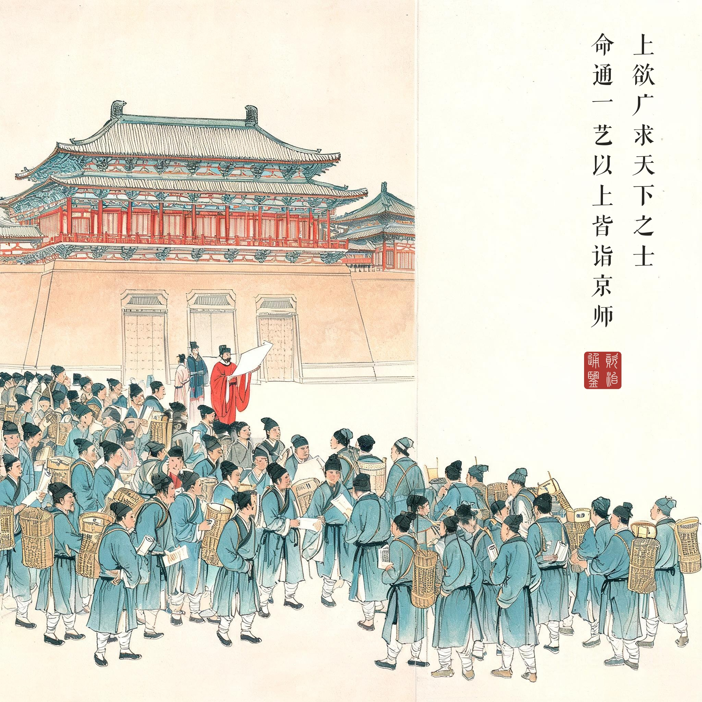
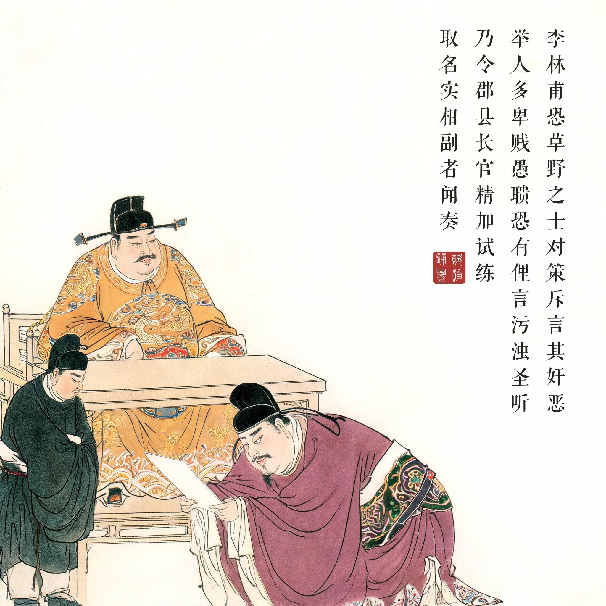
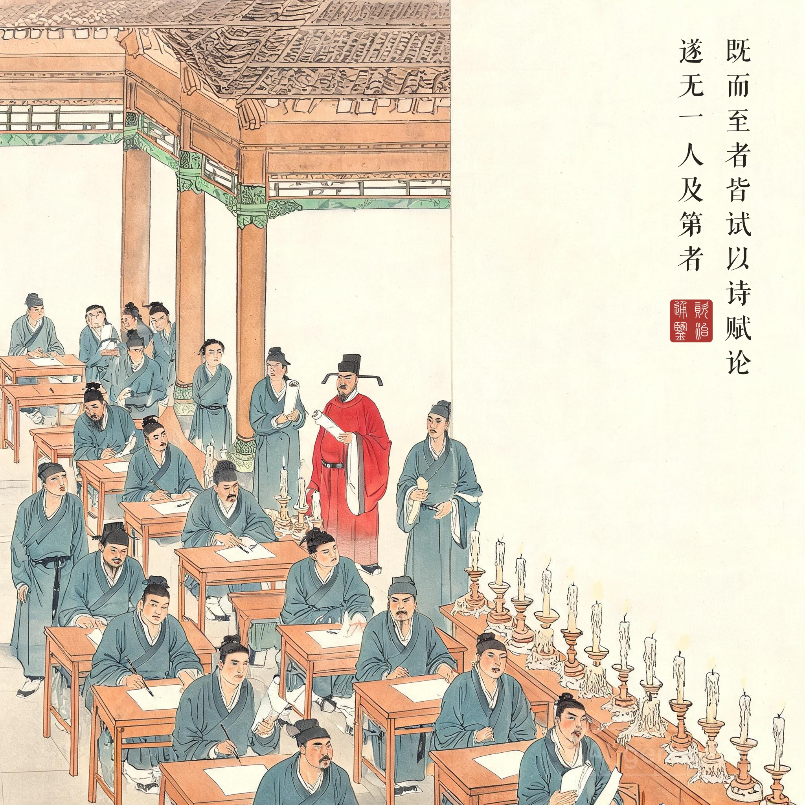
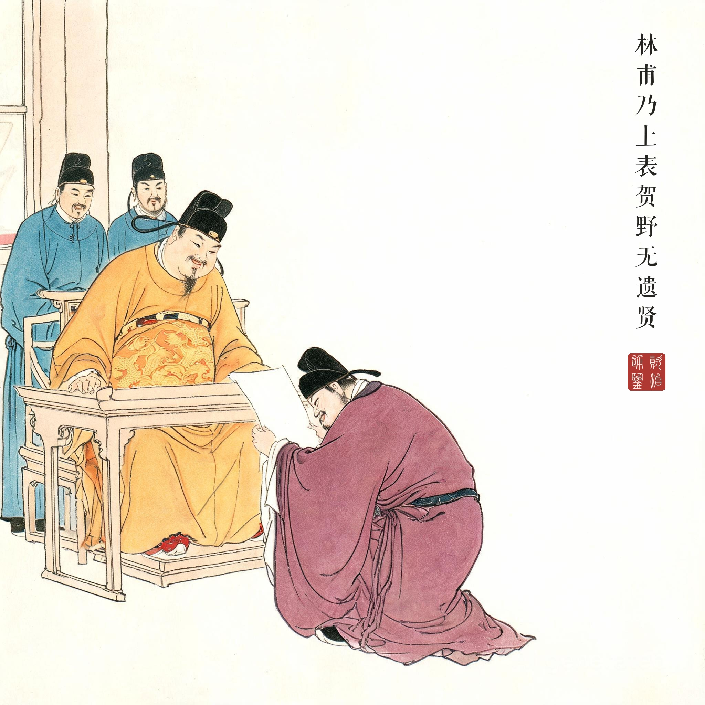

《资治通鉴 · 卷第二百一十五 · 唐纪三十一》玄宗至道大圣大明孝皇帝中之下天宝六载（公元 747 年）
（据 daizhigev20《资治通鉴》底本节录）
上欲广求天下之士，命通一艺以上皆诣京师。李林甫恐草野之士对策斥言其奸恶，建言：“举人多卑贱愚聩，恐有俚言污浊圣听。”乃令郡县长官精加试练，灼然超绝者，具名送省，委尚书覆试，御史中丞监之，取名实相副者闻奏。既而至者皆试以诗、赋、论，遂无一人及第者，林甫乃上表贺野无遗贤。
玄宗想广泛搜求天下的士人，下令凡通晓一门才艺以上的都到京师来。李林甫恐怕民间士人在对策中指斥自己的奸恶，建议说：“举人们大多出身卑贱、愚昧糊涂，恐怕会拿俚俗言语玷污圣听。”于是命令郡县长官精心考试筛选，确实超群绝伦的，报名单送到尚书省，交付尚书省覆试，御史中丞监督，取“名实相副”的上报。结果到京的士人都用诗、赋、论考试，竟没有一个人及第，李林甫于是上表祝贺：民间没有被遗漏的贤才。
一场零录取的科举。科举史上最荒诞的一次放榜：全国范围内一个都不取。荒诞的外衣是程序正义——地方初筛、尚书覆试、御史监督、诗赋论取文——每一个环节都合规、可复核、无懈可击，唯独结果被上表时换了名字：不是“本朝无一人可用”，而是“野无遗贤”。权力的语言艺术在李林甫手里达到顶峰：他用一句颂圣话完成了对全国人才市场的一次公开羞辱，而皇帝收到的文件里只有喜气。
害怕对策的人。《通鉴》把动机写得极直白：“恐草野之士对策斥言其奸恶。”这一句是全回的钥匙——李林甫怕的不是士人有才，是士人有嘴。台阁之臣受他“甘言”的饲养与“腹剑”的威慑，早已不敢言；只有草野之士初生无畏，对策是他们一生唯一一次直面天子的机会。所以这场考试必须零录取：录取一个，就是放进一个不受控制的发声器。上一回他拆掉的是“在朝者”（卢绚、严挺之），这一回他焊死的是“进朝之路”——一个政权的信息入口和人才入口被同一个人同时关闭，这在制度史上是最危险的状态。
落第名单里坐着谁。读《通鉴》这一段时画外站着两个人：三十六岁的杜甫和二十九岁的元结。杜甫此后困守长安，“饥卧动即向一旬，敝衣何啻联百结”；元结把这次落第刻进石头，记为李林甫专权的罪证。天宝六载的落第者里还站着多少个未来的栋梁，无从统计——我们只知道九年之后渔阳鼙鼓动地来时，为玄宗守潼关、守睢阳、守太原的那一代人，没有一个出自这场“野无遗贤”的考试。贺表写完的那天，盛世的账期就开始倒数了。读画看第四幕：李林甫捧表跪贺、皇帝抚案而笑——两个笑面之间，是空无一人的榜。